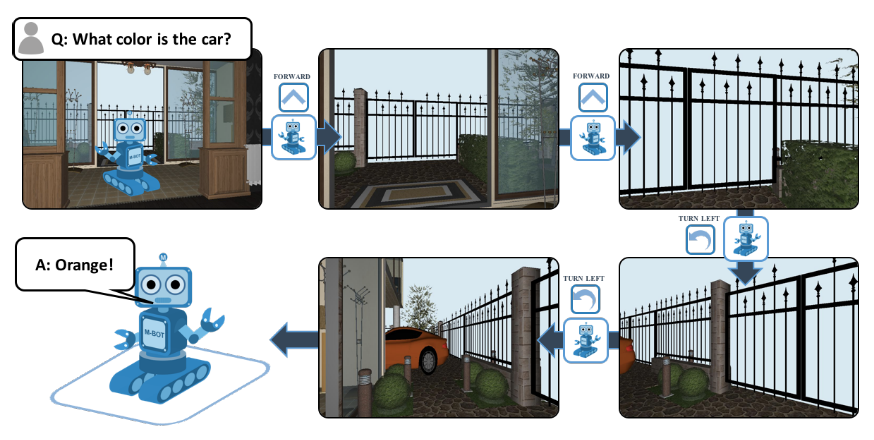
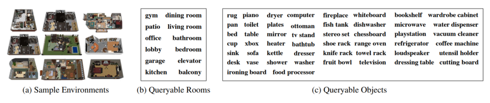

Paper Link, Project Page, YouTube

どんなもの？
ロボットが環境内を動き回りながら探索し、質問に対する答えの文を生成する Embodied QA というタスクを提唱しました。強化学習ベースのend-to-endな手法でEQAロボットを学習させました。
先行研究と比べてどこがすごい？
賢いagentsには、環境（五感情報）を知覚し、情報をやりとりし、行動できることが将来的に求められています（ドラえもんへの第一歩）。その目標への一歩として、Embodied Question Answeringタスクを新たに提案しました。Embodied QA達成には主体的な動作、言語理解、目標への移動、一般常識の保有（「車はガレージにあるだろう」）、言語を動作に落とし込むなど、広いAIタスクを解く必要がある難度の高いタスクです。
- AIは環境内のランダムな位置にスポーン
- 質問を受ける（ex. 車は何色？）
- 環境内を一人称視点で動き回り、質問に対する答えを探る
- 質問に対する答えの文を生成
本研究では、Embodied QAを達成するロボットの作成手法も提案しました。ロボットが環境内を動き回りながら探索し、質問に対する答えの文を生成します。
技術や手法のキモはどこにある？
- Adaptive Computation Time navigatorという強化学習ベースでのend-to-endな手法を提案
- タスク処理を計画と制御の２つのモデルに分解

どうやって有効だと検証した？
SUNCG datasetという住宅3D仮想環境で実験しました。

質問の正答率、移動の正確性において従来より高いスコアを誇りました（EQA用に最適化されていないアルゴリズムなので、優位性を主張するのはアンフェアな気はしますが）。

議論はあるか？
- Amazonさんとか、大きい倉庫を持っている企業は喜びそう
- マップやオブジェクト情報が既知という前提があるため、完全に未知の領域には応用できないおそれ
次に読むべき論文はあるか？
EQAの系列の論文です。